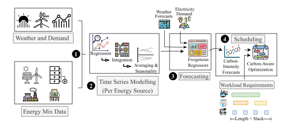
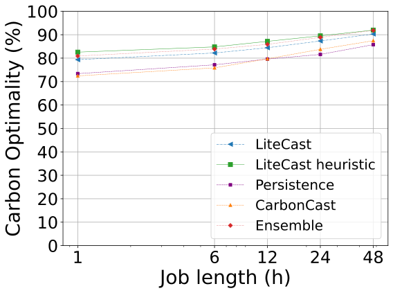

Contributed to Litecast, a lightweight forecaster to predict carbon emissions of data centers in each energy production region by applying the SARIMAX model for the purpose of job scheduling.
Litecast addresses the challenge of knowing the optimal period to use electricity grid. Electricity grids across the world have different energy sources and thus have differnet times when they are carbon optimal. Litecast utilizes a forecasting model with the insight of following the trend rather than the accuracy, to use significantly less data than competitors and be over 90% carbon optimal. This insight is encapsulated in the idea of concordance, which is the ranked order of forecasts. Leveraging this insight, we developed a concordance-based middleware system integrated into Kubernetes to schedule jobs based on forecasted emissions, utilizing the SARIMAX model for time series forecasting rather than a neural network.
Developed a middleware that leverages concordance to enhance time series forecasting. Demonstrating that optimizing for concordance can lead to more effective job scheduling decisions than accuracy metrics.
Conducted comprehensive time series analysis to identify patterns and trends in carbon emission data. Utilized statistical methods to obtain optimal parameters for the SARIMAX model such as training length.
Adapted control theory principles to optimize the SARIMAX model's performance, increasing carbon optimality results by 10%.
Reproduced state-of-the-art results in carbon emission forecasting, adapting their models to extend the forecasting horizon. Evaluated the models to Litecast, demonstrating the latter's ability to match or exceed performance while utilizing less data without the use of neural networks.
Implemented a middleware integrated with Kubernetes for spatial and temporal job scheduling based on forecasted carbon emissions.
Demonstrated that concordance is a more reliable and stronger indicator of carbon optimality over accuracy metrics such as MAPE.
Achieved up to 90% carbon optimality in the scheduled jobs.
Achieved competitive or better carbon optimality than SOTA models without requiring the use of neural networks, thus allowing for the use of 52x less data than SOTA models.

